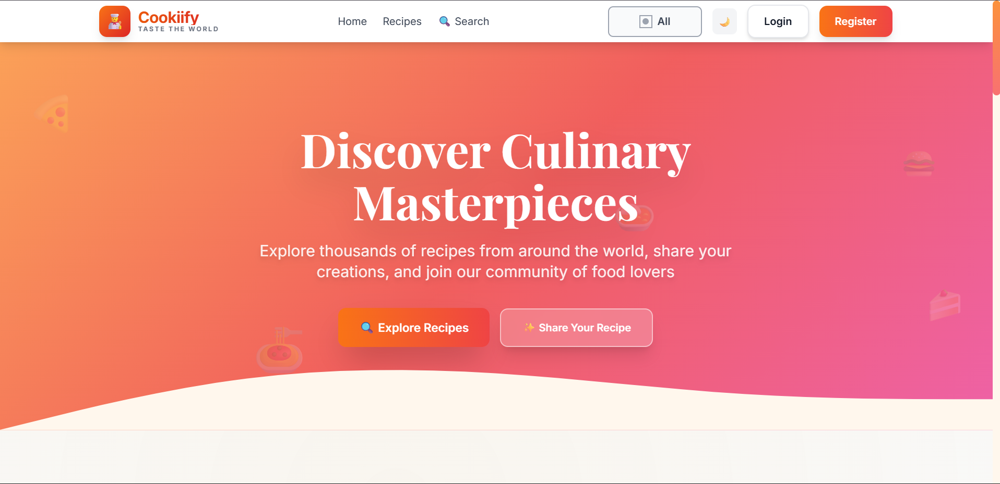
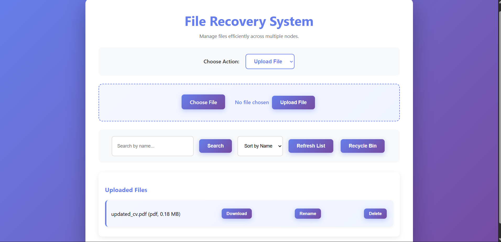
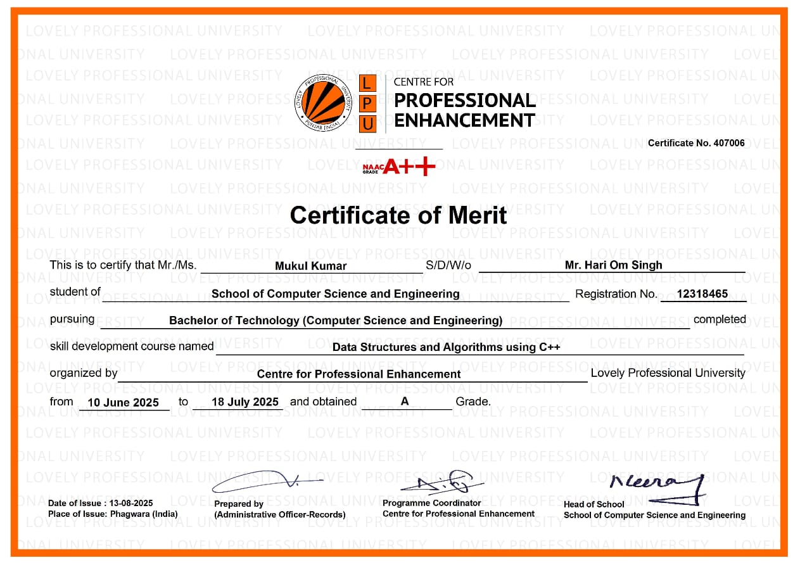
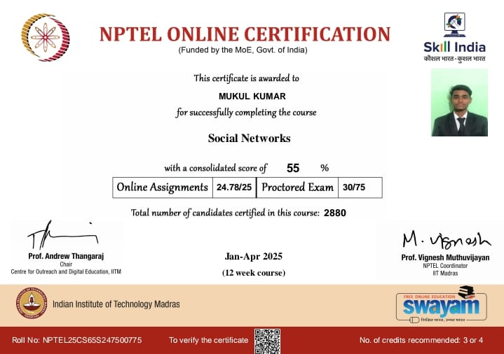
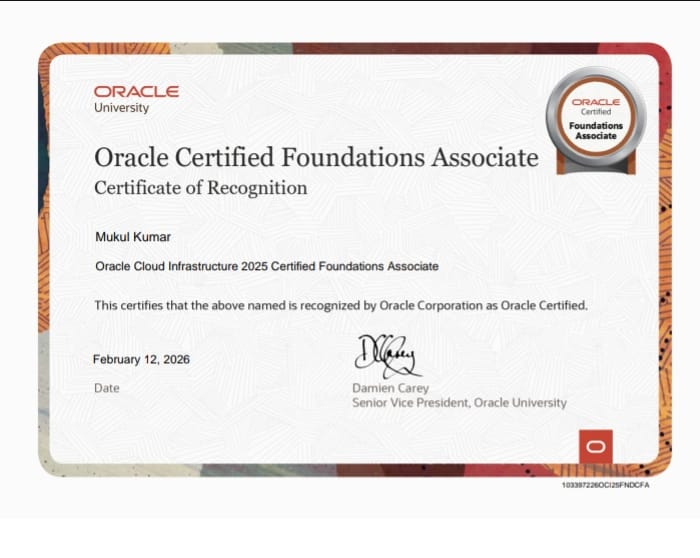
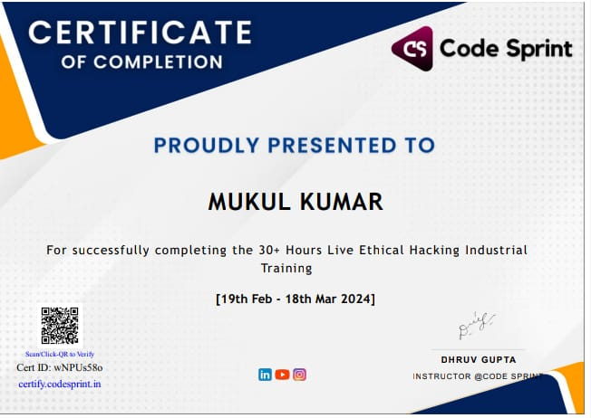

Skills
C++
Linux
Git
GitHub
AWS
Docker
Aspiring Cloud Engineer passionate about building scalable applications using C++, DSA and Cloud Technologies.
I am a B.Tech Computer Science & Engineering student at Lovely Professional University with a strong interest in building scalable and efficient software systems. I enjoy solving real-world problems through code and continuously improving my technical skills.
My core strength lies in Data Structures and Algorithms (DSA) using C++, where I have built a solid foundation in problem solving, logical thinking, and writing optimized code. I actively practice coding problems to enhance my analytical abilities.
Alongside DSA, I am deeply interested in Cloud Computing and DevOps. I am learning how modern applications are deployed, managed, and scaled using cloud platforms like AWS and tools like Docker and Git.
I believe in continuous learning and hands-on practice. I prefer building projects to understand concepts deeply rather than just theoretical knowledge.
My goal is to become a skilled Cloud Engineer and contribute to building reliable and scalable systems in the tech industry.
Bachelor of Technology - Computer Science and Engineering
Intermediate
Matriculation
C++
Linux
Git
GitHub
AWS
Docker

Problem:
Users struggle to find simple and structured recipes quickly.
Solution:
A modern web platform to explore recipes with clean UI and easy navigation.
My Role:
Frontend Developer – Built responsive UI and structured layout.
Highlights:

Problem:
Users accidentally delete important files and struggle to recover them efficiently.
Solution:
Developed a system that allows users to restore deleted files using structured recovery logic.
My Role:
Developer – Implemented core recovery logic and user interaction system.
Highlights:
Lovely Professional University • June 2025 – July 2025

Lovely Professional University

NPTEL - IIT Madras

Oracle University

Code Sprint